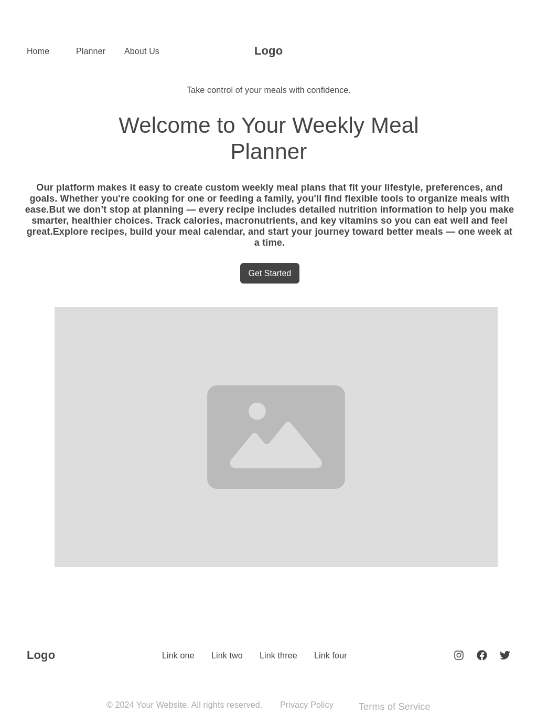
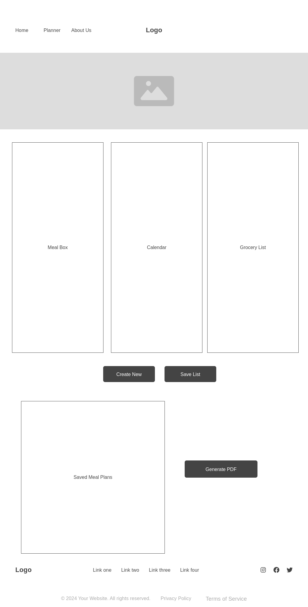

Site Purpose
This site helps users plan weekly meals, generate grocery lists, and make informed nutritional choices.
Target Audience
This site is for busy families, people that work with a structured diet, and anyone who wants to simplify meal planning.
Branding
Site Name: The Weekly Meal Planner
Typography and Colors
- Font Style: Playfair Display
Color Palette
#e6e0da
#f5f5f5
#6c1f25
#c6a15c
#f9f5ef
#8e3e45
#ffffff
rgba(0,0,0,0.1)
rgba(0,0,0,0.08)
Content Structure
- Homepage – Welcome, and Get Started
- Meal Planner – Drag-and-drop calendar
- Grocery List – Auto-generated shopping list
Wireframes
These wireframes represent the layout of the home and planner pages.
Home Page Wireframe
Meal Planner Wireframe
Dynamic Javascript Elements
This site includes a JavaScript-powered interactive meal planner that allows users to drag and drop recipes onto a weekly calendar. As meals are placed on each day, a dynamic grocery list is automatically generated and updated in real time. The list compiles ingredients from all selected meals, combining quantities where possible to make shopping easier and more efficient. It will also have the ability to save plans and lists.
Planned Features & Style Guide
- Modern, responsive layout
- Google Fonts: Playfair Display and Open Sans
- Primary Colors: Soft satin, light gray, wine red, gold accent
- Navigation with dropdowns